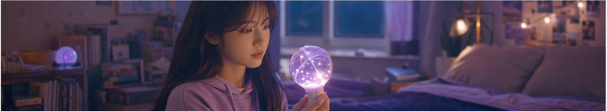
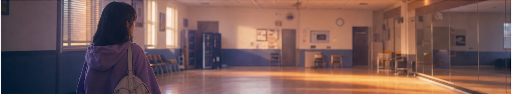
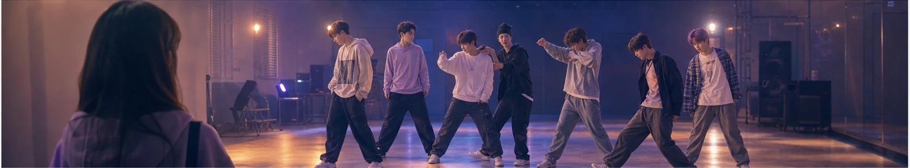

8년 전으로 돌아간 팬, ‘최애 데뷔’가 건드린 마음
열성 팬이 비극적인 사고를 막기 위해 8년 전으로 돌아간다는 드라마 ‘최애 데뷔’가 첫 방송 소식과 함께 네이버 연예 검색에서 주목받았다. 타임슬립과 아이돌 성장기를 결합한 설정은 익숙하지만 강력하다. 이미 결말을 아는 인물이 과거의 작은 선택을 바꾸려 할 때, 시청자는 성공 여부뿐 아니라 변화의 대가까지 궁금해진다.
팬을 주인공으로 세운 점도 흥미롭다. 무대 위 스타가 아닌 관객석의 사람이 서사의 중심에 들어오면, 응원과 소비로만 보였던 팬심이 행동과 책임의 문제로 확장된다. 좋아하는 사람을 지키고 싶다는 마음은 순수하지만, 상대의 삶을 대신 결정할 권리까지 주지는 않는다. 이 경계가 섬세하게 다뤄질수록 이야기는 깊어진다.

8년 전이라는 시간은 향수를 만드는 장치다. 당시의 연습실, 휴대전화, 패션, 음악 방송 문화가 현재와 대비되면 시청자는 자신의 과거도 함께 떠올린다. 다만 복고 소품을 나열하는 것보다 데뷔를 준비하던 청춘의 불안, 작은 기회에 전부를 거는 절박함을 보여주는 편이 더 큰 공감을 얻는다.
아이돌 성장 드라마의 설득력은 연습 과정에서 나온다. 무대는 짧지만 그 뒤에는 반복되는 안무, 보컬 훈련, 팀 내 갈등과 화해가 있다. 주인공의 미래 지식이 모든 문제를 쉽게 해결해 버리면 긴장이 약해진다. 정보를 알고 있어도 사람의 마음과 우연은 통제할 수 없다는 제한이 있어야 선택이 의미를 갖는다.
첫 방송을 볼 때는 로맨스의 방향만큼 인물의 주도성을 살펴볼 만하다. ‘최애’가 구원의 대상에만 머무는지, 스스로 꿈과 관계를 선택하는지에 따라 이야기가 달라진다. 팬인 주인공 역시 과거에 머무르지 않고 자신의 상처와 현재를 돌아보아야 균형 잡힌 성장 서사가 완성된다.

타임슬립 서사는 과거를 바꾸면 현재가 어떻게 달라지는지 보여주는 규칙이 중요하다. 기억이 유지되는지, 한 번의 선택이 새로운 갈래를 만드는지, 돌아갈 기회가 제한되는지가 명확할수록 시청자는 인물의 결정을 납득할 수 있다. 음악 드라마라면 무대의 성취만큼 실패한 연습과 관계의 균열도 충분히 쌓아야 한다. 팬과 아티스트 사이의 정보 격차를 로맨스의 편리한 장치로만 쓰지 않고, 신뢰를 얻는 과정으로 풀어내는지도 살펴볼 만하다. 또한 실제 팬 문화를 과도한 집착으로만 그리지 않고 응원, 기록, 공동체 활동의 다양한 얼굴을 담는다면 공감의 폭이 넓어진다. 과거를 구하는 이야기가 결국 현재의 자신을 받아들이는 이야기로 돌아올 때 타임슬립의 감정은 완성된다.
화제의 속도가 빠를수록 정보의 날짜와 출처를 확인하는 습관이 중요하다. 검색 결과의 제목만 보지 말고 공식 발표와 원문을 함께 살피며, 예고 단계의 내용과 확정된 사실을 구분해야 한다. 개인의 짧은 후기나 영상은 현장감을 주지만 전체 상황을 대표하지는 않는다. 서로 다른 관점을 비교하고 새 공지가 나오면 판단을 업데이트하자. 관심을 표현할 때도 당사자의 개인정보와 초상권, 아직 공개되지 않은 내용을 존중해야 한다. 빠르게 공유하는 것보다 정확하고 배려 있게 이해하는 태도가 결국 더 좋은 팬 문화와 공론장을 만든다.
한편 검색량이 높다는 사실이 곧 가치나 완성도를 뜻하는 것은 아니다. 화제가 시작된 배경과 사람들이 반응한 이유를 차분히 나누어 보면 유행을 더 입체적으로 읽을 수 있다. 서로 다른 취향과 경험을 존중하고, 확인되지 않은 내용을 단정하거나 과장된 표현으로 갈등을 키우지 않는 것도 중요하다. 오늘의 인기 키워드를 잠깐 소비하는 데서 그치지 않고 우리 생활과 문화에 어떤 변화를 남기는지 지켜볼 때 이야기는 더 풍성해진다.
결국 이 장르가 건드리는 질문은 단순하다. 시간을 되돌릴 수 있다면 사랑하는 사람을 위해 무엇을 바꾸고, 무엇은 그대로 두어야 할까. 정답은 없지만 그 망설임이 시청자를 다음 회로 이끈다. 화려한 무대와 타임슬립 장치 너머에서 두 청춘이 각자의 선택권을 지켜낼 수 있을지가 가장 기대되는 지점이다.